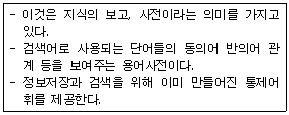
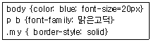
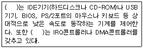
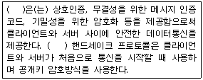

전자상거래운용사 (2013-04-28 기출문제)
1과목: 인터넷 일반
1. 다음 중 웹 콘텐츠 저작 도구로 HTML 기반의 WYSIWYG 방식을 지원하는 멀티미디어 웹 저작 도구는?
- Dreamweaver
- Acrobat
- Photoshop
- QuarkEpress
(정답률: 62%)

2. HTML에서 FORM 태그의 METHOD 속성으로 POST를 사용하여 pwd라는 변수로 데이터를 전송하였다. 다음 중 서버 측에서 전송된 데이터를 사용하기 위한 ASP 문장으로 옳은 것은?
- Request.Form("pwd")
- Request.QueryString("pwd")
- Response.Form("pwd")
- Response.QueryString("pwd")
(정답률: 35%)
3. 다음 중 스타일의 사용 예와 그에 대한 설명으로 옳지 않은 것은?
- b, u, i {background-color:blue} ⇒ <b>,<u>,<i> 태그에 지정된 문자의 배경색을 blue로 설정한다.
- a:link{text-decoration:none} ⇒ 하이퍼링크가 설정된 문자열의 밑줄을 표시하지 않는다.
- p{text-transform:capitalize} ⇒ 영문자를 모두 대문자로 변환하여 출력한다.
- p{font-family:돋움체,궁서체,바탕체} ⇒ 기본 글꼴로 돋움체를 사용하며, 돋움체가 없는 경우 궁서체, 바탕체 순서로 글꼴을 대체한다.
(정답률: 52%)
4. 다음 중 표를 만들기 위한 태그와 속성의 사용에 대한 설명으로 옳지 않은 것은?
- <TABLE border=0>이면 웹 브라우저에서 표의 테두리가 보이지 않는다.
- <TD rowspan=2>는 2개의 행을 하나의 행으로 병합하라는 의미이다.
- <TD height=50>이면 셀의 높이가 50픽셀이라는 의미이다.
- <TABLE align=“center”>이면 셀 안의 텍스트가 가로를 기준으로 가운데 정렬하게 된다.
(정답률: 57%)
5. 다음 중 HTML 태그의 사용이 옳지 않은 것은?
- 문서의 배경색 설정 : <body background=“#00ff00”></body>
- 전자 메일 링크 : <a href=“mailto:master@korcham.net”>상담 요청</a>
- 그림 삽입 : <img src=“image1.jpg”>
- 공백문자 삽입 : <font>␣</font>
(정답률: 54%)
6. 다음 중 인터넷 서비스와 관련된 네티켓으로 가장 적절하지 않은 것은?
- 게시판에 글을 올릴 경우에는 가능하면 간단명료하게 작성한다.
- 공개자료실에 파일을 올릴 경우 용량이 큰 자료는 압축하여 올린다.
- 공개토론방에서 어떤 주제에 대해 논쟁을 벌일 경우에는 감정을 절제하며 참여한다.
- 신문 기사 및 방송 영상 등은 저작권의 제약이 없는 개인 블로그에 게시한다.
(정답률: 52%)
7. 다음 중 웹 메일의 특성에 대한 설명으로 옳지 않은 것은?
- 별도의 프로그램 없이 웹 브라우저만 있으면 사용이 가능하다.
- POP3와 SMTP와 같은 메일 서버에 관한 정보를 설정하지 않아도 된다.
- 인터넷 접속만 가능한 곳이면 어디에서든 이용할 수 있다.
- 웹 메일의 특성상 용량이 큰 파일은 첨부파일로 보낼 수 없다.
(정답률: 45%)
8. 다음 중 자바 스크립트에 대한 설명으로 가장 적절하지 않은 것은?
- 클라이언트 스크립트 언어로 클라이언트 웹 브라우저에 의해 실행된다.
- 다양한 내장 객체를 지원하여 객체를 이용한 코딩이 가능하다.
- HTML 문서 내에 포함되어 실행될 수도 있고, 별도의 파일로 저장되어 실행될 수도 있다.
- 클래스 정의 및 다중 상속 등과 같은 객체지향언어의 특징을 완벽히 지원한다.
(정답률: 46%)
9. 다음 중 웹 환경에서 구현되는 서버 측 웹 프로그래밍 언어에 해당되지 않는 것은?
- ASP
- XML
- PHP
- JSP
(정답률: 49%)
10. 다음 중 Session 객체에 저장된 모든 객체들을 없애고, 이들 객체들이 점유하고 있던 자원들을 다시 서버에 반환하기 위해 Session에서 사용하는 메소드는?
- Quit
- Timeout
- Abandon
- Redirect
(정답률: 42%)
11. HTML에서 프레임 사용 시 하이퍼링크 시킨 문서가 동일한 프레임에서 열리도록 할 때 사용하는 속성은?
- target=_top
- target=_self
- target=_parent
- target=_blank
(정답률: 55%)
12. 다음 설명에 적절한 검색엔진 관련 용어는?

- 불용어(Stop Word)
- 누출(Leakage)
- 절단(Truncation)
- 시소러스(Thesaurus)
(정답률: 53%)
13. 다음 중 웹 상에 존재하는 문서들을 가져오기 위해 웹이 하이퍼텍스트 구조를 자동으로 추적하여 문서들을 검색하는 프로그램으로 적절하지 않은 것은?
- Crawler
- Spider
- Robot
- Parser
(정답률: 43%)
14. 다음 중 개인정보 침해를 예방할 수 있는 방법으로 가장 적절하지 않은 것은?
- 공공장소에서 인터넷 사용 후에는 쿠키 정보를 삭제한다.
- 회원 가입 시 주민등록번호 기입을 필수로 하는 사이트에만 가입한다.
- 더 이상 사용하지 않는 사이트는 회원 탈퇴한다.
- 인터넷 뱅킹과 같은 전자금융거래 시에는 OTP를 사용한다.
(정답률: 53%)
15. 다음의 소프트웨어 목록 중 그 성격이 다른 하나는?
- 파이어폭스(Firefox)
- 크롬(Chrome)
- 사파리(Sapari)
- 피카사(Picasa)
(정답률: 45%)
16. 다음 중 인터넷 익스플로러의 인터넷 옵션에서 방문한 웹 사이트의 목록을 삭제할 때 선택해야 할 항목은?
- 쿠키
- 임시 인터넷 파일
- 기록
- 양식 데이터
(정답률: 41%)
17. 다음 중 웹 상에서 친구·선후배·동료 등 지인과의 인맥관계를 강화시키고, 새로운 인맥을 쌓으며 폭넓은 인적 네트워크를 형성할 수 있도록 해주는 서비스를 의미하는 것은?
- Blog
- SNS
- IRC
- UMS
(정답률: 50%)
18. 다음 중 그래픽 도구와 일반적인 파일 형식에 대한 설명으로 옳지 않은 것은?
- Photoshop : psd
- Flash : swf
- Illustrator : ai
- Acrobat : dwg
(정답률: 49%)
19. 다음 중 아래의 스타일에 대한 설명으로 옳은 것은?

- <p>태그와 <b>태그 영역의 글꼴이 맑은고딕으로 설정된다.
- 본문의 배경색이 파란색으로 설정된다.
- 본문의 글자 크기는 20포인트로 설정된다.
- my라는 클래스가 적용된 영역에는 실선 테두리가 생긴다.
(정답률: 45%)
20. 다음 중 일상 생활에서의 언어와 비교하여 인터넷 언어의 특징으로 가장 적절하지 않은 것은?
- 소리나는 대로 사용한다.
- 이모티콘을 사용한다.
- 축약이나 줄임말을 사용한다.
- 존칭을 사용한다.
(정답률: 50%)
2과목: 전자상거래 일반
21. 다음 중 RFM, MCIF, LTV의 공통점은 무엇인가?
- 고객 데이터 분석 기법
- 재고 관리 기법
- 물류 관리 기법
- 웹 프로모션 기법
(정답률: 42%)
22. 다음 중 고객과의 관계를 중시하는 마케팅 방식으로 보기에 가장 부적합한 문항은 무엇인가?
- 일대일 마케팅
- 다이렉트 마케팅
- 데이터베이스 마케팅
- 관계 마케팅
(정답률: 57%)
23. 다음 중 재구매 고객(단골 고객)이 기업에 더 많은 이익을 가져다주는 이유가 아닌 것은?
- 고객 유지비용은 시간이 지날수록 감소함
- 시간이 지날수록 더 많은 상품을 구매함
- 통상적인 가격인상에 대한 가격민감도가 높음
- 판매자를 다른 잠재 구매자에게 소개해 줌
(정답률: 65%)
24. 일반적으로 제품의 속성은 탐색적, 경험적, 신뢰적 속성으로 나누어진다. 다음 중 세 가지 속성에 해당하는 제품이 올바른 것은?
- 탐색적(책), 경험적(의류), 신뢰적(골동품)
- 탐색적(의류), 경험적(골동품), 신뢰적(책)
- 탐색적(골동품), 경험적(의류), 신뢰적(책)
- 탐색적(골동품), 경험적(책), 신뢰적(의류)
(정답률: 40%)
25. 인터넷 상에서 광고를 위해 매체를 구매할 때 이용되는 CPM(Cost Per Mille) 방식은 어떤 매체 단위 구매유형이라 할 수 있나?
- 고정 단가형
- 노출 기준형
- 클릭 기준형
- 구매 기준형
(정답률: 48%)
26. 다음 중 효과적인 시장세분화를 위한 전제조건이라 할 수 없는 것은?
- 세분시장의 크기, 기타 특성 등이 측정가능해야 한다.
- 세분시장 내 고객욕구는 상이하고 세분시장 간 욕구는 동일해야 한다.
- 세분시장만을 타겟층으로 마케팅을 해도 이익이 날수 있을 만큼의 규모가 갖추어져야 한다.
- 세분시장의 고객들에게 효과적이고 효율적으로 접근할 수 있어야 한다.
(정답률: 43%)
27. 아래 보기 내용은 전통적인 대중마케팅과 비교할 때 인터넷마케팅에서 갖고 있는 특징을 열거한 것이다. 잘못 기술된 문항을 고르시오.
- 마케팅 정보 수집이 용이하다.
- 판매되는 상품의 가격을 결정하기가 쉽다.
- 광고 효과 측정이 용이하다.
- 고객들이 상품 가격을 쉽게 비교할 수 있다.
(정답률: 58%)
28. 다음 중 대중마케팅과 관계마케팅에 대한 설명으로 올바르지 않은 것은?
- 시장접근방법에서 대중마케팅은 비차별적이며 관계마케팅은 차별적이다.
- 마케팅 목표에서 대중마케팅은 시장점유율이고 관계마케팅은 고객점유율이다.
- 주요 관리대상에서 대중마케팅은 제품이고 관계마케팅은 고객이다.
- 커뮤니케이션 방식에서 대중마케팅은 쌍방향이고 관계마케팅은 단방향이다.
(정답률: 43%)
29. 전자상거래에서 주로 이용되는 지급 결제 수단을 결제형태에 따라 구분했을 때 다음 중 성격이 다른 한 가지는?
- 계좌이체형
- 신용카드형
- 전자수표형
- IC카드형
(정답률: 40%)
30. 다음 중 전자지불시스템에 대한 설명으로 올바른 것은?
- 전자현금형의 시스템 유형은 중앙집중형이며 신용카드형은 분산형과 집중형이 있다.
- 전자현금형은 주로 고액을 거래할 때 이용된다.
- 신용카드형은 거래와 동시에 이체가 된다.
- 스마트카드형은 거래와 동시에 이체가 되지 않는다.
(정답률: 46%)
31. 다음 중 물류공동화 전략을 실행하기 위한 전제조건이 아닌 것은?
- 일정지역 내에 공동 수·배송에 참여하는 복수의 하주가 존재해야 한다.
- 거리가 인접해서 화물의 수집(집하)이 용이해야 한다.
- 배송지역이 널리 분포해야 한다.
- 참여기업의 배송조건이 유사해야 한다.
(정답률: 35%)
32. 다음 중 제3자 물류(Third Party Logistics)에 대한 설명으로 올바르지 않은 것은?
- 물류에 관련된 모든 업무를 담당하는 회사를 말한다.
- DHL, UPS, FedEx 등이 대표적인 제3자 물류회사이다.
- 전자상거래의 발전으로 향후 기업들의 물류기업 의존도는 낮아질 전망이다.
- 제3자 물류회사를 이용하면 물류시설, 운송수단에 대한 투자를 할 필요가 없다.
(정답률: 53%)
33. 다음 중 하역 및 운반의 단위적재(유닛로드시스템)를 기본으로 하는 하역 및 운송 시스템 구축을 위해 필요한 것은?
- 팔레트화 및 컨테이너화
- 재고 합리화
- 물류 공동화
- 물류 정보화
(정답률: 43%)
34. 다음 중 물류관리의 핵심활동이 아닌 것은?
- 운송 관리
- 재고 관리
- 고객서비스 관리
- 자재 관리
(정답률: 38%)
35. 다음 중 전자상거래의 현황과 전망에 대한 설명으로 올바르지 않은 것은?
- 국내 젊은층이 인터넷에서 소비하는 컨텐츠 중 UCC가 차지하는 비중은 낮은 편이다.
- 인터넷 기술의 고도화 및 지능화로 e-비즈니스 모델의 지속적 진화가 예상된다.
- 인터넷 비즈니스 초기의 수익모델은 배너광고가 주류를 이루었다.
- 향후 e-비즈니스의 견인요소는 이용자참여 동영상, 지능화, 모바일화가 될 것이다.
(정답률: 50%)
36. 다음 중 인터넷 기업의 가치를 평가할 수 있는 주요 요소가 아닌 것은?
- 비즈니스 모델의 지속적인 수익 창출력
- 모방이 어려운 비즈니스 모델 보유
- 독특한 비즈니스 모델을 창안하여 기회를 선점
- 투자금액의 규모
(정답률: 42%)
37. 다음 중 전자상거래의 발전 방향이 올바른 것은?
- e-marketplace → collaborative-commerce → ubiquitous-commerce
- collaborative-commerce → e-marketplace → ubiquitous-commerce
- ubiquitous-commerce → collaborative-commerce → e-marketplace
- e-marketplace → ubiquitous-commerce → collaborative-commerce
(정답률: 40%)
38. 다음 중 전통적인 상거래 방식과 비교하여 전자상거래 방식이 갖는 장점이라 할 수 없는 것은?
- 단순한 유통채널
- 지역적 시간적 제약이 없음
- 고객정보 수집이 용이함
- 높은 수익률을 기대할 수 있음
(정답률: 40%)
39. 다음 중 국내에서 사용하는 도메인(domain)이 아닌 것은 무엇인가?
- go
- re
- ne
- se
(정답률: 36%)
40. 프린터 관련 소모품을 생산하는 K사는 대부분의 기업 및 공공기관에서 MRO 제품을 인터넷을 통해 구매한다는 점에 착안하여 이에 관련된 쇼핑몰을 구축했다. K사 에서 시도하고 있는 비즈니스는 다음 중 어느 유형에 속하는가?
- B2B
- B2C
- C2C
- G2C
(정답률: 43%)
3과목: 컴퓨터 및 통신 일반
41. “기존의 전통적 거래방식과 전자상거래 방식에서 가장 많은 차이를 보이는 부분은 ((ㄱ))이고 가장 차이를 보이지 않는 부분은 ((ㄴ))이다.”에서 (ㄱ)과 (ㄴ)에 들어갈 올바른 말은?
- (ㄱ) 상품 검색, (ㄴ) 대금 지불
- (ㄱ) 대금 지불, (ㄴ) 배송 체계
- (ㄱ) 배송 체계, (ㄴ) 거래 인증
- (ㄱ) 거래 인증, (ㄴ) 상품 검색
(정답률: 41%)
42. 다음 중 B2C의 유형으로 볼 수 없는 e-비즈니스 모델은?
- 전자상점(e-shop)
- 전자경매(e-auction)
- 전자조달(e-procurement)
- 가상 커뮤니티(virtual communities)
(정답률: 52%)
43. 다음 중 일반적으로 e-비즈니스 모델에서 정확히 묘사되어야 하는 부분이 아닌 것은?
- 거래에 관여한 당사자들과 상품, 서비스, 정보의 흐름을 나타내는 아키텍쳐
- 거래에 참가하는 당사자들에게 주어지는 편익
- 수입원에 대한 정확한 묘사
- 구체적인 채용 계획
(정답률: 33%)
44. 유통경로 상에서 중간상의 개입으로 불필요한 가격 상승을 유발한다는 소비자들의 불평에도 불구하고 여전히 중간상의 필요성이 존재한다. 다음에서 설명하는 ‘중간상의 필요성’ 중 잘못 기술된 문항을 고르시오.
- 중간상의 개입으로 총 거래수가 감소되어 제조업자와 소비자 양자에게 실질적인 비용 감소를 제공한다.
- 분업의 원리에 입각하여 중간상이 존재하는 것이 전문화에 유용하다.
- 각 중간상이 적절한 규모로 변동비를 분담하는 효과로 인해 ‘변동비 우위 효과’가 발생한다.
- 중간상은 대량의 제품을 집중 준비함으로써 사회적 보관(storage) 총량을 감소시킨다.
(정답률: 35%)
45. 다음 중 OSI 7계층에서 하위계층에서 상위계층으로의 순서가 옳은 것은?
- 물리-데이터링크-네트워크-트랜스포트-세션-표현-응용
- 데이터링크-물리-네트워크-세션-표현-응용-트랜스포트
- 네트워크-물리-데이터링크-트랜스포트-세션-응용-표현
- 응용-세션-표현-네트워크-트랜스포트-데이터링크-물리
(정답률: 40%)
46. 인터넷 프로토콜 중 TCP 계층에 대한 설명으로 옳지 않은 것은?
- 응용서비스들이 가상적으로 연결된 형태(end-to-end)로 서비스를 제공한다.
- 송신측의 TCP는 수신측의 TCP와 전이중(Full duplex)방식으로 통신한다.
- 단위시간에 보내는 세그먼트의 양을 조절하는 흐름제어 기능을 수행한다.
- 높은 신뢰도를 요구하지 않으며, 비연결형 서비스에 주로 사용된다.
(정답률: 35%)
47. 윈도우 2003서버의 NTFS 사용권한에 대한 설명으로 옳지 않은 것은?
- NTFS 사용권한은 NTFS 파일시스템으로 포맷된 파티션 또는 볼륨에서만 사용할 수 있다.
- NTFS 사용권한은 공유폴더 사용권한과 동일하며, 폴더 각각에 대하여 부여할 수 있다.
- NTFS 사용권한은 사용자가 로컬로 자원을 액세스하거나, 네트워크를 통해 액세스 하는 모든 경우에 적용된다.
- NTFS 파티션 또는 볼륨상에 있는 모든 폴더와 파일들은 자신의 ACL(Access Control List)을 가지고 있다.
(정답률: 19%)
48. ‘W’ 문자의 유니코드(Unicode)가 16진수 표기로 0⑤7이고 ‘e’ 문자의 유니코드가 0065라고 할 때 ‘We’의 이진표기법을 바르게 적은 것은?
- 0000000001010111 0000000001100101
- 1111111101011000 1111111110011010
- 0000000001101000 0000000000110111
- 1010101001010101 0000111100001111
(정답률: 42%)
49. 다음 괄호( ) 안에 해당하는 하드웨어 구성장치로 옳은 것은?

- 노스(North)브릿지
- 사우스(South)브릿지
- Hub-Link
- V-Link
(정답률: 33%)
50. 다음 중 미래 IT산업의 전망과 장점에 관련된 용어와 설명으로 적절하지 않은 것은?
- M-commerce : 무선 인터넷 서비스를 이용한 전자상거래의 활성화
- IT와 NT(Nano 기술), BT(Bio 기술) : 융합에 따른 신 산업 등장
- HCI(Human Computer Interaction) : 모션 추적장치를 이용한 입출력 센서의 발전
- IPTV : 케이블방송이라고 일컫는 무선통신망의 진보 기술
(정답률: 44%)
51. 다음 중 TCP/IP 프로토콜을 사용하는 도스(dos) 명령어에 대한 설명으로 옳지 않은 것은?
- ipconfig 해당 컴퓨터의 IP설정과 관련된 정보를 나타낸다.
- ping 지정한 목적지 IP주소까지의 연결상태를 확인해 준다.
- tracert 자동으로 할당할 수 있는 IP주소를 표시해 준다.
- nslookup DNS서버에 연결하여 IP주소나 도메인 이름에 대한 질의를 할 수 있게 해 준다.
(정답률: 39%)
52. 다음 중 괄호( ) 안에 들어갈 용어로 옳은 것은?

- SSL(Secure Socket Layer)
- TCP/IP
- PGP(Pretty Good Privacy)
- MIME(Multipurpose Internet Mail Extension)
(정답률: 48%)
53. 다음 중 윈도우 서버의 DNS 서버 구축에 관련된 설명으로 옳지 않은 것은?
- DNS 서버와 Active Directory 도메인 서비스를 설치하여 함께 작동하도록 구성할 수 있다.
- DNS 레코드 중 NS는 도메인의 네임서버, SOA는 도메인의 권한 시작점, A는 호스트의 IP주소에 대한 정보를 가지고 있다.
- DNS의 정방향 조회 영역은 아이피주소를 물었을 때 매핑된 도메인 주소를 알려주며, 역방향 조회 영역은 도메인 주소를 물었을 때 매핑된 아이피를 알려준다.
- DNS 서버는 다양한 유형의 영역과 저장소를 지원하는데, 보조영역은 다른 서버에 있는 영역의 복사본을 만들어 주 서버 처리량의 균형을 유지시켜준다.
(정답률: 40%)
54. CSMA/CD 방식의 데이터 전송방식에 대한 설명으로 옳지 않은 것은?
- 데이터를 전송하려는 컴퓨터가 먼저 네트워크의 라인 사용여부를 점검한다.
- 네트워크 라인이 이미 선점되어 다른 컴퓨터가 사용 중이면 대기한다.
- 무선 네트워크상에서 충돌을 회피하기 위하여 예비신호를 목적지에 보내 응답을 받은 후 전송한다.
- 네트워크 라인이 사용 중이 아니면 데이터를 바로 전송한다.
(정답률: 38%)
55. LAN의 네트워크 토폴로지 중 네트워크에 연결된 컴퓨터수가 많을 경우 케이블 구입 비용 등 가격 대비 효율성이 떨어지고, 네트워크의 관리가 어려운 방식은?
- 버스(bus)형 토폴로지
- 링(ring)형 토폴로지
- 성(star)형 토폴로지
- 망(mesh)형 토폴로지
(정답률: 35%)
56. 다음 중 Web2.0의 특징에 해당하는 기술로 가장 적절하지 않은 것은?
- RSS(Rich Site Summary, Really Simple Syndication)
- Social Tagging
- Open API
- On-Demand Video
(정답률: 40%)
57. 다음 중 인터넷에서 일반적으로 제공되는 서비스와 관련된 프로토콜로 가장 적절하지 않은 것은?
- FTP
- HTTP
- SMTP
- RIP
(정답률: 47%)
58. 다음 중 자기복제 기능이 없는 악성프로그램들로만 연결된 것은?
- 파일바이러스 웜 스파이웨어
- 파일바이러스 트로이목마 - 논리폭탄
- 트로이목마 논리폭탄 트랩도어
- 웜 트로이목마 - 논리폭탄
(정답률: 43%)
59. 다음 중 IPsec에 관한 설명으로 옳지 않은 것은?
- IP계층의 보안프로토콜이다.
- 호스트-호스트 간, 호스트-보안게이트웨이 간, 보안게이트웨이-보안게이트웨이 간 경로를 보호하기 위한 프로토콜이다.
- 데이터 송신자의 인증을 허용하는 인증헤더 AH와 송신자의 인증 및 데이터 암호화를 함께 지원하는 ESP 등 두 종류의 보안 서비스를 지원한다.
- 재전송 공격방지와 기밀성을 제공하지 않는 비개방형 표준 프레임워크이다.
(정답률: 40%)
60. 다음 중 컴퓨터의 처리 속도 향상과 관련된 메모리로 가장 적절하지 않은 것은?
- Associative Memory
- Memory Interleaving
- Cache Memory
- Virtual Memory
(정답률: 49%)